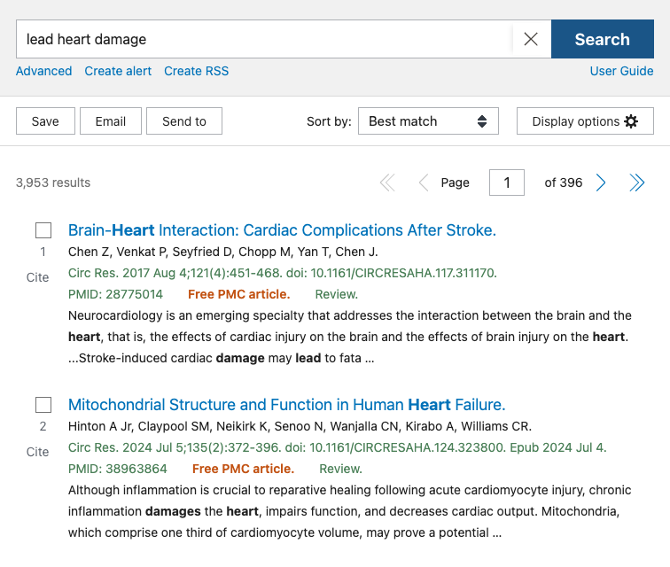
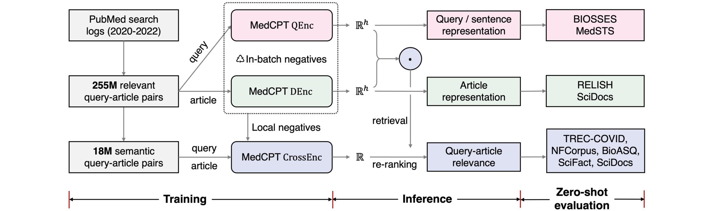
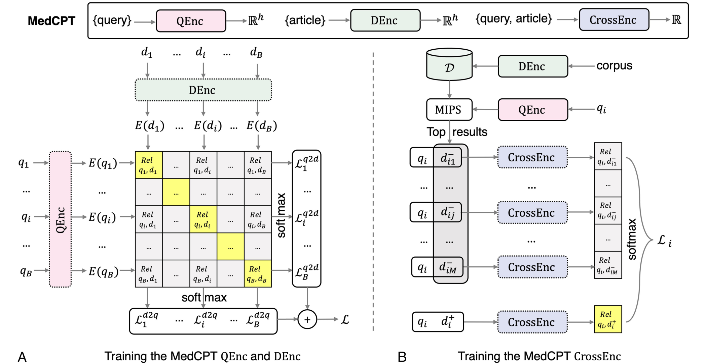

AI for Evidence Utilization · Retrieve
MedCPT: Contrastive Pre-trained Transformers with Large-scale PubMed Search Logs
Qiao Jin, Won Kim, Qingyu Chen, Donald C. Comeau, Lana Yeganova, John Wilbur, Zhiyong Lu
Bioinformatics 2023
These slides were generated with the help of AI and may contain errors.
01Motivation
Matching terms, not their meaning
- PubMed’s Best Match learns to rank from 100+ features — but none capture meaning.
- Search “lead heart damage” — meaning the metal — and the top hits use “lead” as a verb instead.

02Workflow
MedCPT learns to retrieve and rerank from PubMed clicks
Training
Click supervision → retriever → reranker
PubMed click pairs
255M query–article pairs
Train the retriever
Contrastive learning
with in-batch negatives
Mine hard negatives
High-ranked alternatives
from the trained retriever
Train the reranker
18.3M filtered pairs
+ mined hard negatives
Search
The trained encoders retrieve, then rerank
Encode the query
Map the query to a vector
Retrieve candidates
Search stored article vectors
Articles encoded offline
Score each candidate
Read query + article jointly
Return ranked articles
Order by relevance score
03Method
Three encoders: retrieve, then re-rank
- MedCPT is a family of three contrastively pre-trained encoders.
- A query encoder and an article encoder retrieve; a cross-encoder re-ranks the top hits.

04Training details
Contrastive training on PubMed clicks
- Retriever training uses 255M query–article pairs from PubMed search logs.
- Contrastive learning pulls relevant pairs together in embedding space.
- The cross-encoder re-ranker is then trained on hard negatives from the retriever.

05Result
State-of-the-art zero-shot performance on BEIR
- Evaluated zero-shot on the biomedical subtasks of BEIR.
- MedCPT (330M) achieves the highest average across the five evaluated tasks.
| Method | Size | TREC-COVID | NFCorpus | BioASQ | SciFact | SciDocs | Avg. |
|---|---|---|---|---|---|---|---|
| Sparse retrievers | |||||||
| BM25 | – | 0.656 | 0.325 | 0.465 | 0.665 | 0.158 | 0.454 |
| BM25 + MiniLM | 66M | 0.757 | 0.350 | 0.523 | 0.688 | 0.166 | 0.497 |
| docT5query | 220M | 0.713 | 0.328 | 0.431 | 0.675 | 0.162 | 0.462 |
| Dense retrievers | |||||||
| Contriever + MiniLM | 176M | 0.701 | 0.344 | – | 0.692 | 0.171 | – |
| ColBERT | 110M | 0.677 | 0.305 | 0.474 | 0.671 | 0.145 | 0.454 |
| Large language model retrievers | |||||||
| Google GTR-XXL | 4.8B | 0.501 | 0.342 | 0.324 | 0.662 | 0.161 | 0.398 |
| OpenAI cpt-text-XL | 175B | 0.649 | 0.407 | – | 0.754 | – | – |
| MedCPT (ours) | |||||||
| MedCPT (retriever only) | 220M | 0.697 | 0.340 | 0.332 | 0.724 | 0.123 | 0.443 |
| MedCPT | 330M | 0.709 | 0.355 | 0.553 | 0.761 | 0.172 | 0.510 |
Selected methods; zero-shot nDCG@10. Avg. covers all five tasks; – = not reported. Source: Table 1.
06Result
The MedCPT document encoder outperforms every baseline on RELISH
- RELISH scores how well a model finds articles related to a given paper.
- MedCPT’s document encoder tops every baseline — including PubMed’s own PMRA related-articles algorithm.
| Method | MAP@10 | NDCG@10 | Avg. |
|---|---|---|---|
| BM25 | 86.72 | 87.39 | 87.21 |
| PMRA | 87.57 | 88.40 | 88.40 |
| BioSentVec | 88.10 | 87.76 | 88.29 |
| PubMedBERT | 81.07 | 82.39 | 82.26 |
| SciNCL | 92.74 | 91.91 | 92.52 |
| MedCPT (DEnc) | 93.99 | 93.12 | 93.72 |
Article-similarity re-ranking on RELISH (%). MedCPT’s document encoder leads. Source: Table 2.
07Result
MedCPT leads on BIOSSES and ranks second on MedSTS
- MedCPT’s embeddings capture sentence-level meaning, not just document relevance.
- Its query encoder leads on BIOSSES; BioSentVec is slightly ahead on MedSTS.
| Model | BIOSSES | MedSTS |
|---|---|---|
| BioWordVec | 0.694 | 0.747 |
| BioSentVec (PubMed+MIMIC) | 0.795 | 0.767 |
| PubMedBERT | 0.528 | 0.521 |
| SPECTER | 0.694 | 0.702 |
| SciNCL | 0.847 | 0.706 |
| MedCPT (QEnc) | 0.893 | 0.765 |
Pearson correlation with human sentence-similarity judgments (BIOSSES, MedSTS). Underlined values are best in each column; MedCPT ranks second on MedSTS. Source: Table 3.
08Impact
A widely used biomedical retriever
- 10M+ downloads across the three encoders on Hugging Face — a de-facto default biomedical retriever.
- Its cross-encoder re-ranks candidate cases in DeepRare, the Nature rare-disease diagnosis agent (2025).
- Others adopt it off-the-shelf as their retriever — e.g. Self-BioRAG, OLAPH and AAAI’s EMS-QA.
- The most-used retriever across surveyed medical-RAG systems (Yale survey, 2025).
- Powers NCBI LitSense 2.0 — semantic search over 38M abstracts, serving millions of requests.
- The embedding model behind much of our own work — TrialGPT, MedRAG, i-MedRAG, MedCite, Med-V1, GeneAgent, AgentMD, and BriefContext.
09Summary
MedCPT at a glance
| Background | Biomedical search should match meaning, not just keywords. |
| Problem | Lexical search (PubMed Best Match) misses semantically related papers. |
| Approach | Query and article encoders retrieve; a cross-encoder reranks. Trained using PubMed click pairs. |
| Results | Leading zero-shot biomedical retrieval; first on BIOSSES and second on MedSTS. |
| Impact | 10M+ downloads across the three encoders; powers NCBI LitSense 2.0; the most-used retriever in medical RAG. |